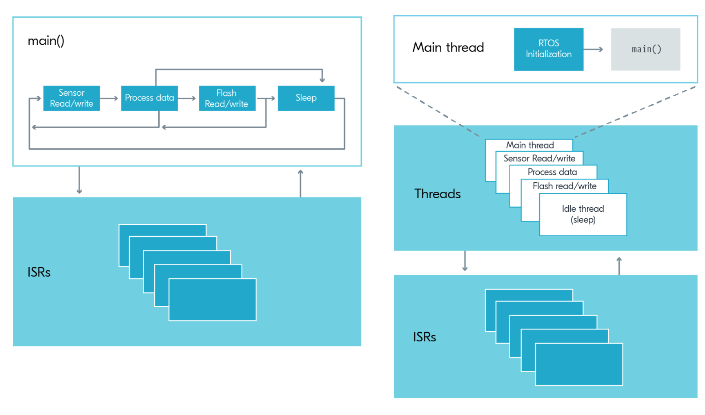
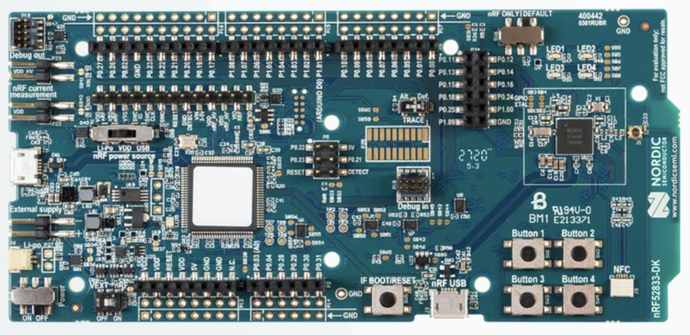

Introduction to Zephyr & Nordic SoC
BME554L -Fall 2025 - Palmeri
Why Firmware?
Firmware isn’t “software”…
- Firmware is a special kind of software that is designed to interact with hardware.
- Firmware is often written in C, but can be written in other languages.
- Firmware is highly resource constrained
- Software is often written in Python, Java, C++, etc.
- Software is often written to be run on a general-purpose computer (laptop, desktop, server, etc.), that typically is not resource constrained.
- User Interface
- Web Server
- Database
- Data Processing / Analytics
Medical Device Examples
Zephyr RTOS
What is Zephyr?
Why Zephyr?
- Completely open-source RTOS supported by the Linux Foundation
- Quickly becoming the default RTOS for many embedded device companies (e.g., Nordic Semiconductor)
- 100% C-based language; CMake build system; Python-based framework (
west) - Online community growing fast
C Programming Language
- Zephyr is written in C
- CMake build system
- West CLI tools
- We will use an incredibly powerful Visual Studio Code IDE extension pack, nRF Connect developed by Nordic Semiconductor.
Bare Metal vs. RTOS
- Bare-metal super-loop implementations
- Realtime Operating System (RTOS)
- Interupt Service Routines (ISR) / Callbacks

System on a Chip (SoC)
What is a System on a Chip (SoC)?
- CPU
- Memory (RAM) - quite limited
- I/O
- Storage (non-volatile)
- RF / Communication Protocols
- Universal Asynchronous Receiver-Transmitter (UART)
- Inter-Integrated Circuit (I2C)
- Serial Peripheral Interface (SPI)
- Bluetooth Low Energy (BLE)
This is in contrast to a motherboard-based personal computer, which uses additional discrete components or expansion / peripheral cards.
Nordic nRF52833 Development Kit (DK)
